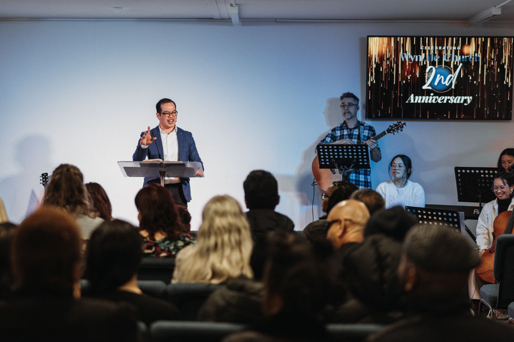
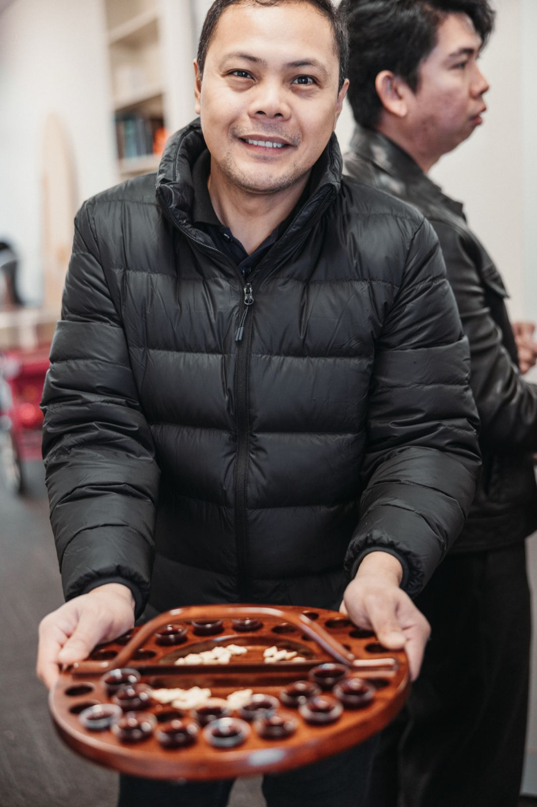

About WynLife Church
WynLife Church is a vibrant, multicultural Christian community located in the Wyndham area of Melbourne's west. We are a church for all people — regardless of background, culture, or where you are in your journey with God.
We gather every Sunday at 10:00 AM at 208 Ballan Rd, Wyndham Vale, and throughout the week in Life Groups and other ministries across the local area.
Our heart is to see people come to know Jesus, grow in faith, and make a real difference in our community and beyond.


Our Bible Beliefs
WynLife Church is grounded in the historic Christian faith as revealed in Scripture. We hold to the following core beliefs:

Leadership
WynLife is led by a committed team of pastors and leaders who are passionate about God's mission in Melbourne's west.

Ps Jimm and Pynqi lead WynLife Church with a passionate heart for the Wyndham community. Together they serve our church family and are committed to seeing people come to know Jesus and grow in faith.



Our pastoral team is here to serve you. We'd love to meet you — please don't hesitate to introduce yourself after a Sunday service or reach out to us.
Contact Our Team